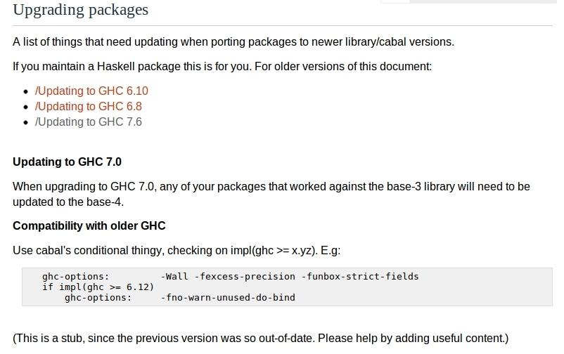

Cabal
Cabal All the Things: From Init to Testing to Dist
Josh Hawkins
April 24, 2013
Shameless Promotion
- Intended to approximate the type safety of Haskell with the expressiveness of Ruby
- Compiles to JS for all your web needs
- Functional, strict, expressive, pure(ish), static(y), inferred, fast, fun
- Strong like a gorilla, yet soft and yielding like a Nerf ball

What is Cabal?
A Common Architecture for Building Applications and Libraries
- It describes packages in a common way allowing for distribution, organization, and cataloging.
- It describes how packages interact with the language.
- It describes what Haskell implementations support packages.
- It provides a way to express dependency on particular libraries, compilers, or versions.
What is HackageDB?
- It is the central repository of open-source Haskell software.
- It functions as an upstream distribution system.
- It provides a clean web interface for viewing and searching existing libraries.
- It provides links to dependencies.
What is Cabal-Install?
- It's a command line interface for Cabal the Library.
- Package management - installing, downloading and dependencies
- Package development - configuring, building, testing and benchmarking
- Package sharing - packaging and uploading
Explore All the Packages
Some commands for fetching, managing and inspecting packages.
* update
* list
* install
* unpack
* haddockcabal update
What does it do?
- This will download the most recent list of packages.
- Where is it downloading this list from?
Run it anywhere
Take a look at the output.
$ cabal update --verbose=3
Downloading the latest package list from hackage.haskell.org
Sending:
GET /packages/archive/00-index.tar.gz HTTP/1.1
Host: hackage.haskell.org
User-Agent: cabal-install/1.16.0.2
Creating new connection to hackage.haskell.org
Received:
HTTP/1.1 200 OK
...
Downloaded to
/Users/jhawkins/Library/Haskell/repo-cache/hackage.haskell.org/00-index.tar.gz
Updating the index cache file...
Reading available packages...Lets try out cabal list.
$ cabal list snaplet-tasks
* snaplet-tasks
Synopsis: Snaplet for Snap Framework enabling developers to administrative
tasks akin to Rake tasks from Ruby On Rails framework.
Default available version: 0.1.2
Installed versions: [ Not installed ]
License: BSD3
Top level overview of the package availableRun it anywhere
Cabal lets you know...
when your packages need an update.
Warning: The package list for 'hackage.haskell.org' is 17 days old.
Run 'cabal update' to get the latest list of available packages.when your cabal-install needs an update.
Note: there is a new version of cabal-install available.
To upgrade, run: cabal install cabal-installcabal install
It does lots of work for you.
Give it a package name from the list
- Grabs the Library's Dependencies.
- Grabs the Library you specified.
- Build, compiles, installs, registers, generates docs...
- Installs library in a common place
- Installs executable(s) in a common place
Some example output
$ cabal install snap
Resolving dependencies...
Downloading MonadCatchIO-transformers-0.3.0.0...
Configuring MonadCatchIO-transformers-0.3.0.0...
Building MonadCatchIO-transformers-0.3.0.0...
Preprocessing library MonadCatchIO-transformers-0.3.0.0...
[1 of 1] Compiling Control.Monad.CatchIO ( src/Control/Monad/CatchIO.hs, dist/build/Control/Monad/CatchIO.o )Continued…
Documentation created: dist/doc/html/snap/index.html
Installing library in
/Users/jhawkins/Library/Haskell/ghc-7.4.2/lib/snap-0.11.2.2/lib
Installing executable(s) in
/Users/jhawkins/Library/Haskell/ghc-7.4.2/lib/snap-0.11.2.2/bin
Registering snap-0.11.2.2...
Installed snap-0.11.2.2
Updating documentation index /Users/jhawkins/Library/Haskell/doc/index.htmlTake a look at the Source.
Get your hands dirty with cabal unpack.
- This simply Downloads the package from Hackage
- Creates a versioned directory
- And drops the source code right there.
Run it somwhere for source code
Some example output
$ cabal unpack snap --verbose=3
Reading available packages...
snap-0.11.2.2 has already been downloaded.
Unpacking to snap-0.11.2.2/
Updating snap-0.11.2.2/snap.cabal with the latest revision from the index.Generate some documentation via cabal haddock.
- Generates some nicely formatted html
- Documentation created: dist/doc/html/fizzbuzz/fizzbuzz/index.html
- This is another option when exploring the api of a library found on hackage.
Run it from the root of the package
Develop All the Packages
Commands to guide development
* init
* configure
* build
* test
* bench
* sdist
* uploadWhat does "cabal init" do?
An interactive command that aids in the generation of a .cabal file
- Guesses at obvious descriptors - name, version, author, maintainer...
- Gives some common options for the necessary fields
- Generates a template LICENSE for you.
- Adds a specified Section - Library or Executable
- Adds descriptions and TODOs to the .cabal file
Run it from a new dir
Some example prompts
$ Package name? [default: scratch]
Package version? [default: 0.1.0.0]
Please choose a license:
* 1) (none)
2) GPL-2
3) GPL-3
4) LGPL-2.1
5) LGPL-3
6) BSD3
7) MIT
8) Apache-2.0
9) PublicDomain
10) AllRightsReserved
11) Other (specify)Continued…
What does the package build:
1) Library
2) Executable
Your choice? 1
Include documentation on what each field means (y/n)? [default: n] .cabal All the Fields
Provides a declarative description of your package
- Defined in the PackageDescription module of cabal
- Contains a top level description for use by Hackage
- Contains Build Information
- Contains Flags
- Contains the Core Sections of your Package
Top Level Description
A place for metadata about the package for use by Hackage
name: enterpriseFizzBuzz
version: 1.15.3.1
synopsis: The command-line interface for FizzBuzzing up to a number!
description: A very complex tool for … add lots of description here...
homepage: http://www.haskell.org/enterpriseFizzBuzz/
bug-reports: https://github.com/JHawk/enterpriseFizzBuzz/issues
license: BSD3
license-file: LICENSE
author: JHawk <jhawk@fizzbuzzEnterprises.com>
maintainer: jhawk@fizzBuzzEnterprises.com
category: Text
source-repository head
type: git
location: https://github.com/JHawk/enterpriseFizzBuzz/
subdir: FizzBuzzLibBuild Description
build-type: Simple
cabal-version: >=1.8
-- defines other files to be packaged and distributed
extra-source-files: README bootstrap.sh
A Few Common Package Build Fields
-- some have subfields
build-depends:
-- prelude +
base >= 2,
buzz,
-- semantic versioning
fizz >= 1.2 && < 1.3
-- fizz ==1.2.*
-- package level visibility only
-- compile but don't export
other-modules:
EnterpriseFizzBuzz.FizzBuzz
-- Some specify specific variables
buildable: false
hs-source-dirs: src/FizzBuzz
-- Some set flags or tokens
ghc-options: -Wall -fwarn-tabsConditional Thingy
if impl(ghc <= 7.4.2)
build-depends:
bytestring >= 0.9.1 && <0.10
else
build-depends:
bytestring >= 0.10.0 && <0.11Define Your Own Conditional Thingy
Define it at top level
flag build-stuff
description: Build if True
default: FalseConditional logic in your .cabal Sections
if flag(build-stuff)
buildable: True
build-depends: someSpecialDep
else
buildable: FalseUse it via cabal configure
$ cabal configure --flags=build-stuff
.cabal Sections
Defining the code's structure and build
- Defines individual targets for cabal to build
- Provides a description of how to build the target
- Describes your code's structure
Library Section
Requires Exposed-Modules
Describes modules exposed internal to this package and to the package's consumer
library
build-depends:
base >= 4 && <= 5
other-modules:
EnterpriseFizzBuzz.HiddenStuff
-- Adding .hs to the end will fail on configuration.
exposed-modules:
EnterpriseFizzBuzz.Fizz
, EnterpriseFizzBuzz.FizzBuzzThere can be only one
Executable Section
Requires Unique Identifier, Main-Is
Describes an executable runnable from the command line
executable enterpriseFizzBuzz
build-depends: base ==4.5.*
hs-source-dirs: src
main-is: Main.hs
-- alternatively
-- main-is: src/Main.hsCan define more than one
Test-Suite Section
Requires Unique Identifier, Main-Is, Type, Package Identifier
Executable that indicates failure with a non-zero exit code
test-suite enterpriseUnit
build-depends: base ==4.5.*
, HUnit
, test-framework
, test-framework-hunit
, enterpriseFizzBuzz
hs-source-dirs: test-suite/unit
type: exitcode-stdio-1.0
main-is: Enterprise/FizzBuzzUnitTests.hsCan define more than one.
Benchmark Section
Requires Unique Identifier, Main-Is, Type, Package Identifier
Very much like the test-suite section
benchmark enterpriseBench
build-depends: base ==4.5.*
, criterion
, enterpriseFizzBuzz
hs-source-dirs: bench
type: exitcode-stdio-1.0
main-is: Enterprise/FizzBuzzBenchmarks.hsCan define more than one.
Look at a Complete .cabal File.
Create All the Code
FizzBuzz
Write a program that prints the numbers from 1 to 100. But for multiples of three print “Fizz” instead of the number and for the multiples of five print “Buzz”. For numbers which are multiples of both three and five print “FizzBuzz”.
Simple Main for FizzBuzz
src/Main.hs
Another Main for FizzBuzzing Single Numbers
src/SingleMain.hs
Stub Module in Library
src/Enterprise/FizzBuzz.hs
Run All the Code
What does "cabal configure" do?
- Prepares to build the package
- Looks for available packages
- Tries to resolve dependencies
- Decides which tools to use
- Tells which dependencies aren't available
Run it from the root of the package
What does "cabal build" do?
- Runs cabal configure with most recently used options.
- Creates dist/build
- Builds the package and puts it in dist/build/enterpriseFizzBuzz/enterpriseFizzBuzz
Run it from the root of the package
What happens when I run it?
$ cabal configure && cabal build
$ ./dist/build/enterpriseFizzBuzz/enterpriseFizzBuzz
How many numbers should I FizzBuzz.
4
enterpriseFizzBuzz: Prelude.undefinedTest All the Code
Using test-framework
A test framework for combining tests made using QuickCheck and HUnit and much more…
- Test in parallel
- Report in deterministic order (same input, same output)
- Supports Unit as well as Invariant tests via Providers
- Supports test grouping and assertions
Unit Testing with HUnit
- HUnit is an adaptation of JUnit
- Provides functions for writing Assertions
- Assertions are types that on failure will output a message
Some functions for generating assertions
assertEqual :: (Eq a, Show a) => String -> a -> a -> Assertion
(@=?) :: (Eq a, Show a) => a -> a -> Assertion
(@?=) :: (Eq a, Show a) => a -> a -> Assertion
(@?) :: AssertionPredicable t => t -> String -> AssertionHUnit Provider and the Test Framework
HUnit Provider generates a Test from an Assertion
testCase :: TestName -> Assertion -> TestTest Framework groups the tests
testGroup :: TestName -> [Test] -> TestSourceA few HUnit tests
Run it with cabal test.
Pass configure flags to enable test building
$ cabal configure --enable-tests && cabal build && cabal testTest will report your error
Running 1 test suites...
Test suite enterpriseUnit: RUNNING...
Fizz Buzz Unit Test Cases:
should return empty string: [Failed]
ERROR: Prelude.undefined Pass configure flags to disable test building
$ cabal configure --disable-tests && cabal buildRun it from the root of the package
Lets make them pass!
Some output from our Test Suite
Test suite enterpriseUnit: RUNNING...
showing a fizzbuzz fail:
should fail: [Failed]
expected: "not here"
but got: "Buzz"
showing fizzbuzz pass:
should return 1: [OK]
should return Fizz: [OK]
Test Cases Total
Passed 2 2
Failed 1 1
Total 3 3
Test suite enterpriseUnit: FAIL
Test suite logged to: dist/test/enterpriseFizzBuzz-0.1.0.0-enterpriseUnit.log
0 of 1 test suites (0 of 1 test cases) passed.Install the Code
Using cabal install.
$ cabal install
Resolving dependencies...
Configuring enterpriseFizzBuzz-0.1.0.0...
...
Registering enterpriseFizzBuzz-0.1.0.0...
Installed enterpriseFizzBuzz-0.1.0.0
Updating documentation index /Users/jhawkins/Library/Haskell/doc/index.htmlRun it from the root of the package
Run the executables via the command line.
Add the bin directory to your path PATH="HOME / Library / Haskell / bin: PATH"
$ singleFizzBuzz
Which number should I FizzBuzz?
3
"Fizz"Benchmark the Code
Criterion for Confidence
- Easy to write, build and run benchmarks
- Provides benchmarking for both IO actions and Pure functions
- Provides some nice graphs for further inspection
- Provides easy to use functions for constructing Benchmarks and grouping them
Constructing a Benchmark
- Benchmarks are one or many Benchmarkables
- Benchmarkables have a single method run
- Both Pure and IO instances
- Function bench generates a Benchmark
- Function bgroup groups Benchmarks together
Some signatures
run :: a -> Int -> IO ()
bench :: Benchmarkable b => String -> b -> Benchmark
bgroup :: String -> [Benchmark] -> BenchmarkCreating a Pure Benchmarkable
- nf = fully evaluated
- whnf = evaluated to the outermost data constructor
Important to ensure your code gets evaluated
nf :: NFData b => (a -> b) -> a -> Pure
whnf :: (a -> b) -> a -> PureSome Benchmarks
Run it with cabal bench.
Pass configure flags to enable benchmark building
$ cabal configure --enable-bench && cabal build && cabal benchPass configure flags to disable benchmark building
$ cabal configure --disable-bench && cabal buildRun it from the root of the package
Printed from the command line
- Useful when doing automated checks
- Descriptive about outliers
Tells the mean and standard deviation
benchmarking fizzBuzz head normal form/100 mean: 84.94579 ns, lb 84.61875 ns, ub 85.26468 ns, ci 0.950 std dev: 1.656436 ns, lb 1.389480 ns, ub 2.029530 ns, ci 0.950 found 8 outliers among 100 samples (8.0%) 3 (3.0%) low mild 4 (4.0%) high mild 1 (1.0%) high severe variance introduced by outliers: 12.306% variance is moderately inflated by outliers
Better visualization of results
- Plots a histogram of the samples run
- Smartly interprets how to group the data
- Makes the outliers obvious
- Impresses your boss
To generate some html output
$ ./dist/build/enterpriseBench/enterpriseBench -o enterpriseBench.htmlNow we can open some nice charts in our favorite browser.
Release All the Code
Some commands for preparing and uploading packages.
* haddock (again)
* sdist
* uploadGenerate some docs with cabal haddock.
- Special commenting for better docs
- Take a look at the documentation
Run it from the root of the package
Generate a source distribution file with cabal sdist.
- Building source dist for fizzbuzz-0.1.0.0...
- Preprocessing executable 'fizzbuzz' for fizzbuzz-0.1.0.0...
- Source tarball created: dist/fizzbuzz-0.1.0.0.tar.gz
Run it from the root of the package
Sample output
$ cabal sdist
Distribution quality warnings:
When distributing packages it is encouraged to specify source control
information in the .cabal file using one or more 'source-repository' sections.
See the Cabal user guide for details.
Building source dist for enterpriseFizzBuzz-0.1.0.0...
Preprocessing library enterpriseFizzBuzz-0.1.0.0...
Preprocessing executable 'enterpriseFizzBuzz' for
enterpriseFizzBuzz-0.1.0.0...
Preprocessing benchmark 'enterpriseBench' for enterpriseFizzBuzz-0.1.0.0...
Source tarball created: dist/enterpriseFizzBuzz-0.1.0.0.tar.gzFor those who want to give back, cabal upload.
Requires a Hackage username and password
Pass the path to the tar
$ cabal upload dist/enterpriseFizzBuzz-0.1.0.0.tar.gz
Hackage username:
Hackage password:
Uploading dist/enterpriseFizzBuzz-0.1.0.0.tar.gz...Run it from the root of the package

For More Information
$ cabal unpack cabal && cd Cabal-1.**** && cabal configure && cabal haddock